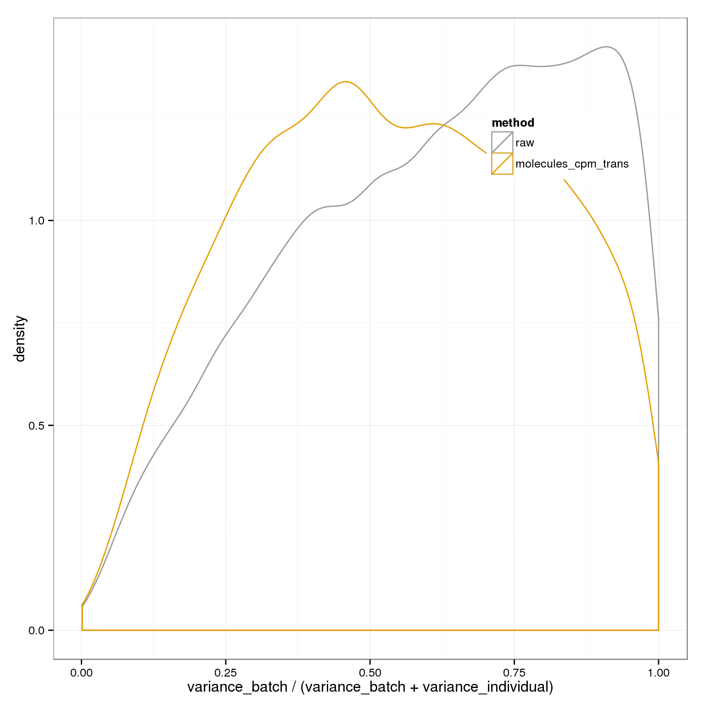
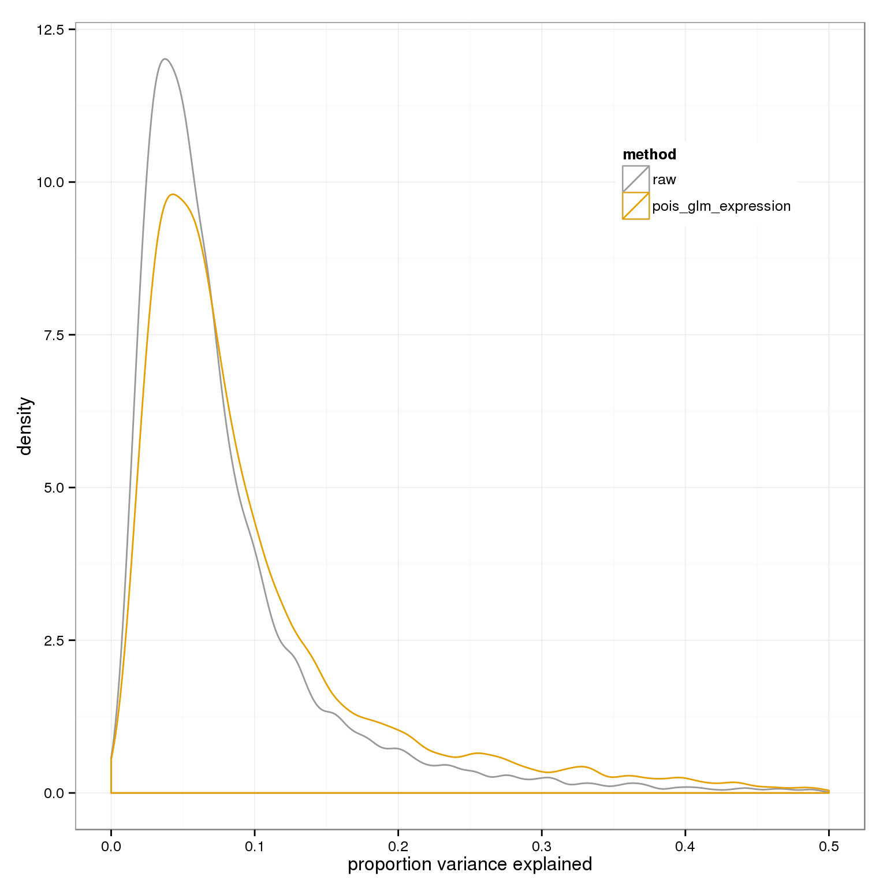

Last updated: 2016-01-05
Code version: 917277f117d98ba0cbeb73313655e946154e3b27
require(ggplot2)
theme_set(theme_bw(base_size = 12))
require(dplyr)
require(doMC)
require(gridExtra)
registerDoMC(7)
require(data.table)Read raw data
anno=read.table("../data/annotation.txt",header=T,stringsAsFactors=F)
quality_single_cells <- scan("../data/quality-single-cells.txt",
what = "character")
anno_filter <- anno %>% filter(sample_id %in% quality_single_cells)
spike <- read.table("../data/expected-ercc-molecules.txt", header = TRUE,
sep = "\t", stringsAsFactors = FALSE)
molecules_filter <- read.table("../data/molecules-filter.txt", header = TRUE,
stringsAsFactors = FALSE)
spike_input <- spike$ercc_molecules_well[spike$id %in% rownames(molecules_filter)]
names(spike_input) <- spike$id[spike$id %in% rownames(molecules_filter)]
spike_input <- spike_input[order(names(spike_input))]
tech <- grepl("ERCC", rownames(molecules_filter))
molecules_filter=as.matrix(molecules_filter)
batches=unique(anno_filter$batch)
molecules_cpm = fread( "../data/molecules-cpm.txt", header = TRUE,
stringsAsFactors = FALSE)
setDF(molecules_cpm)
rownames(molecules_cpm)=molecules_cpm$V1
molecules_cpm$V1=NULL
molecules_cpm=as.matrix(molecules_cpm)
molecules_cpm_trans_shrunk = read.table("../data/molecules-cpm-trans-shrunk.txt", header = TRUE, stringsAsFactors = FALSE)pois_glm_params <- lapply(1:3,function(g) numeric(ncol(molecules_cpm)))
names(pois_glm_params) = c("intercept","nu","theta")
for (i in 1:ncol(molecules_cpm)) {
fit <- glm(molecules_filter[names(spike_input), i] ~ log(spike_input), family="poisson")
pois_glm_params$intercept[i] <- fit$coefficients[1]
pois_glm_params$nu[i] <- fit$coefficients[2]
}
pois_glm_expression <- sweep( sweep( molecules_cpm, 2, pois_glm_params$intercept, "-"), 2, pois_glm_params$nu, "/" )Collect together all the normalized expression matrices for analysis
cpm_mats <- list( raw=molecules_cpm, pois_glm_expression=pois_glm_expression )We need a nested ANOVA since the replicates are not common across the individuals.
my_nested_anova=function(temp) {
global_mean=mean(temp$y)
ind_means=temp %>% group_by(individual) %>% summarize(m=mean(y)) %>% as.data.frame
rownames(ind_means) = ind_means$individual
temp$ind_means=ind_means[ temp$individual, "m" ]
batch_means=temp %>% group_by(batch) %>% summarise(m=mean(y)) %>% as.data.frame
rownames(batch_means) = batch_means$batch
temp$batch_means=batch_means[ temp$batch, "m" ]
c(ssa=sum( (temp$ind_means - global_mean)^2 ),
ssb=sum( (temp$batch_means - temp$ind_means)^2 ),
sse=sum( (temp$y - temp$batch_means)^2 ),
sst=sum( (temp$y - global_mean)^2 ))
}
#aov(x[i,] ~ Error(anno_filter$batch) + anno_filter$individual )Run ANOVAs per gene for each matrix and calculate variance components
anovas <- lapply(cpm_mats, function(x) {
foreach(i=1:nrow(x)) %dopar% my_nested_anova(data.frame(y=x[i,], batch=anno_filter$batch, individual=anno_filter$individual))
})
variance_components <- lapply( as.list(names(anovas)), function(name) {
ss=do.call(rbind,anovas[[name]])[,1:3]
colnames(ss)=c("individual","batch","residual")
data.frame(sweep(ss,1,rowSums(ss),"/"), method=name)
} )
names(variance_components)=names(cpm_mats)
batch_over_explained <- lapply( as.list(names(anovas)), function(name) {
ss=do.call(rbind,anovas[[name]])[,1:2]
colnames(ss)=c("individual","batch")
data.frame( prop_batch=ss[,"batch"] / rowSums(ss), method=name)
} )
names(batch_over_explained) = names(cpm_mats)Plot proportions explained by batch vs. individual
cbPalette <- c("#999999", "#E69F00", "#56B4E9", "#009E73", "#F0E442", "#0072B2", "#D55E00", "#CC79A7")
ggplot( do.call(rbind,batch_over_explained), aes(prop_batch,col=method)) + geom_density(alpha=0.2, position="identity") + xlab("variance_batch / (variance_batch + variance_individual)") + theme(legend.position=c(.8,.8)) + scale_colour_manual(values=cbPalette)+ scale_fill_manual(values=cbPalette)
Plot overall percent variance explained
ggplot( do.call(rbind,variance_components), aes(1-residual,col=method)) + geom_density() + xlab("proportion variance explained") + xlim(0,.5)+ scale_colour_manual(values=cbPalette) + theme(legend.position=c(.8,.8))Warning: Removed 49 rows containing non-finite values (stat_density).Warning: Removed 76 rows containing non-finite values (stat_density).
sessionInfo()R version 3.2.0 (2015-04-16)
Platform: x86_64-unknown-linux-gnu (64-bit)
locale:
[1] LC_CTYPE=en_US.UTF-8 LC_NUMERIC=C
[3] LC_TIME=en_US.UTF-8 LC_COLLATE=en_US.UTF-8
[5] LC_MONETARY=en_US.UTF-8 LC_MESSAGES=en_US.UTF-8
[7] LC_PAPER=en_US.UTF-8 LC_NAME=C
[9] LC_ADDRESS=C LC_TELEPHONE=C
[11] LC_MEASUREMENT=en_US.UTF-8 LC_IDENTIFICATION=C
attached base packages:
[1] parallel stats graphics grDevices utils datasets methods
[8] base
other attached packages:
[1] data.table_1.9.4 gridExtra_2.0.0 doMC_1.3.4 iterators_1.0.7
[5] foreach_1.4.2 dplyr_0.4.2 ggplot2_1.0.1 knitr_1.10.5
loaded via a namespace (and not attached):
[1] Rcpp_0.12.0 magrittr_1.5 MASS_7.3-40 munsell_0.4.2
[5] colorspace_1.2-6 R6_2.1.1 stringr_1.0.0 httr_0.6.1
[9] plyr_1.8.3 tools_3.2.0 grid_3.2.0 gtable_0.1.2
[13] DBI_0.3.1 htmltools_0.2.6 lazyeval_0.1.10 assertthat_0.1
[17] yaml_2.1.13 digest_0.6.8 reshape2_1.4.1 formatR_1.2
[21] codetools_0.2-11 bitops_1.0-6 RCurl_1.95-4.6 evaluate_0.7
[25] rmarkdown_0.6.1 labeling_0.3 stringi_0.4-1 compiler_3.2.0
[29] scales_0.2.4 chron_2.3-45 proto_0.3-10